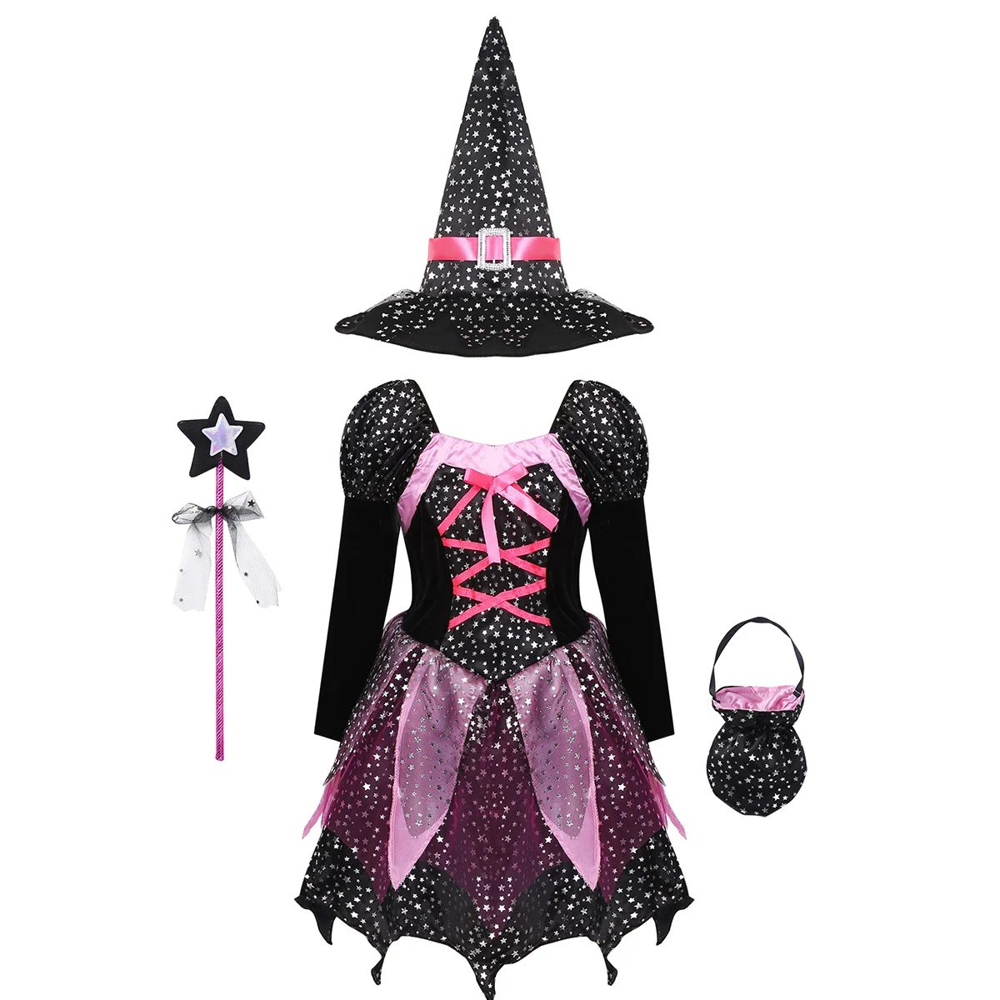
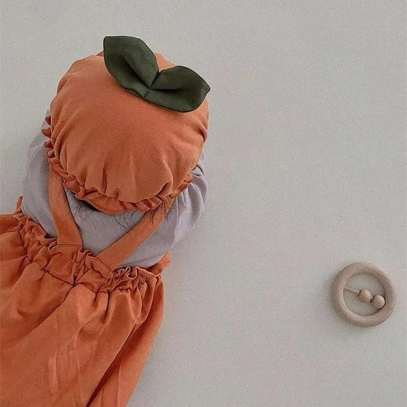

Disfraces de Halloween para niños y bebés (y para mamá a juego) que llegan a tiempo

Cada año pasa lo mismo: llega la última semana de octubre, el colegio avisa de la fiesta de Halloween y en las tiendas solo quedan tallas sueltas. Si lo dejas hecho ahora, te olvidas. Estas son las ideas que mejor funcionan por edades, con la talla que tienes que pedir.
Para tenerlo el 31 de octubre, pídelo antes del 14 de octubre. El envío a España es gratis y tarda de 7 a 14 días.
Bebés (de 0 a 2 años)
En su primer Halloween lo importante es que vaya cómodo y abrigado, y que la foto salga bonita. Nada de máscaras ni piezas sueltas.
- De calabaza. Un pelele naranja con tirantes y un gorrito con hojas, que se pone encima de su ropa: el disfraz de calabaza para bebé. Hay tallas de 0 meses a 2 años.
- De payaso. Pelele de manga larga con cuello de volantes y gorro de pico. Se abrocha fácil para cambiar el pañal: el disfraz de payaso para bebé, de 12 meses a 5 años.
De 2 a 5 años
A esta edad quieren un disfraz que se reconozca y que puedan ponerse sin ayuda.
- Brujita. El disfraz de bruja de 4 piezas trae vestido, sombrero, varita y un bolsito para los caramelos del truco o trato. Va desde 90 cm de altura.
- Esqueleto. Un mono de cuerpo entero con máscara: el disfraz de esqueleto para niño. Talla pequeño: pide por la altura que pone en la tabla de la ficha, no por la talla de ropa.
De 6 a 12 años
Aquí ya quieren dar miedo de verdad.
- La parca. Túnica con capucha, guadaña, guantes de esqueleto, máscara y unas gafas que hacen brillar los ojos en rojo. Con la luz apagada impresiona: el disfraz de parca para niño. La túnica de 140 cm sirve de 8 años en adelante.
- Bruja o esqueleto, en las tallas grandes: la bruja llega hasta 160 cm de altura y el esqueleto, hasta unos 135 cm.
Madre e hija a juego
Es lo que más se comparte en redes: el disfraz de esqueleto con rosas (catrina) tiene tallas de mujer (S a XL) y de niña (120 a 150 cm). Un mono, una flor en el pelo, un poco de maquillaje y ya está.
Cómo acertar con la talla
- Mide la altura del niño descalzo, contra la pared.
- Busca su altura en la tabla de la ficha: cada talla indica para qué altura es. Ojo, la talla del disfraz no es la de la ropa de tienda: el esqueleto «140» es para unos 120-125 cm.
- Si duda entre dos tallas, la mayor. Debajo del disfraz irá una camiseta o un jersey.
Ver todos los disfraces para la familia
Lo que sale en este artículo

Disfraz de calabaza para bebé: pelele y gorro
El disfraz más tierno de Halloween para los más pequeños

Disfraz de payaso para bebé con gorro
Pelele de payaso con cuello de volantes y gorro de pico: su primer Halloween
Disfraz de bruja para niña: vestido, sombrero, varita y bolso
4 piezas con estrellas plateadas y lazos rosas: la brujita más bonita de la calle

Disfraz de esqueleto para niño con máscara
Mono de esqueleto de cuerpo entero y máscara de calavera: el clásico que nunca falla

Disfraz de parca para niño con gafas de ojos rojos
Túnica con capucha, guadaña, guantes de esqueleto, máscara y gafas que brillan en rojo

Disfraz de esqueleto con rosas (catrina) para mujer y niña
Un mono y ya está: el disfraz fácil de Halloween que queda espectacular en las fotos